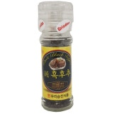

책과 언어에 관심이 많으며, 흐쿠츄라는 닉네임으로 블로그에 에세이를 쓰고 있습니다.
최근에는 단어의 정의를 탐구하는 일에 관심이 많으며, 언어철학에도 관심이 있습니다.
ai와 코딩의 시대에 발 맞춰 자연어와 프로그래밍언어가 연결되는 분야에서 무엇인가 개발하고 싶은 것이 있는 상황입니다.
아직은 먼 이야기이고, 당장 준비 중인 사업을 위한 기술 공부가 더 중요하나 이러한 관심사를 가지고 학습을 능동적으로 해나가고 싶습니다.
hukuchu(김정래)

| 이름 | 전공 | 사업분야 | 관심분야 |
|---|---|---|---|
| 김정래 | 국제통상 | 3d프린팅 | 언어철학 |
안녕하세요. 이번 웹개발 캠프에 참여하게된 흐쿠츄입니다.
관심사
구상중인 웹서비스
현대의 사전을 보면 추상적인 언어일수록 회피적인 정의만이 내려져 있다고 생각합니다.
예를 들어 낭만이라는 단어를 모르는 사람은 없으나, 그것을 정의내릴 수 있는 사람 또한 별로 없다고 생각합니다
그래서 좀더 본질적인 의미가 담긴 새로운 어학사전을 책으로 만들어도 재밌겠다는 상상을 하고 있으며
그러한 앱을 만들어 보거나, 사람들이 자연어를 좀더 프롬프트로 정확하게 변환시키는 것을 도와주는 프로그램도 재미가 있을 것 같습니다
블로그: 흐쿠츄 블로그